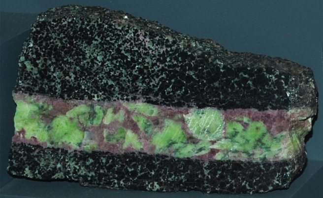

|

| Mn7(SiO4)3(OH)2
This sample of leucophoenicite is displayed in the Smithsonian Museum of Natural History. Leucophoenicite is a silicate mineral of manganese with the composition Mn7(SiO4)3(OH)2. The sample at left is about 12 cm long and is from Franklin, New Jersey. It is described as leucophoenicite with willemite and franklinite. The pink to reddish color is its typical appearance.
|